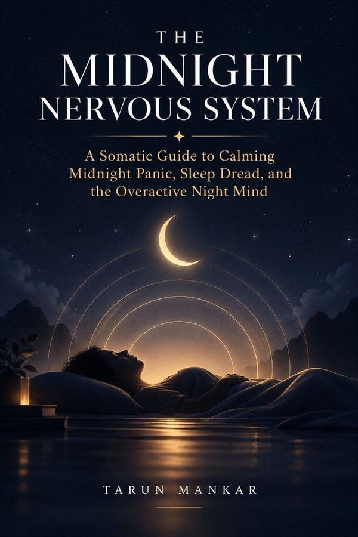

← Back to Complete Library

★★★★★
4.8 / 5 (176 verified reader reviews)
Anxiety & Attachment
The Midnight Nervous System
A Somatic Guide to Calming Midnight Panic, Sleep Dread, and the Overactive Night Mind
"Your head hits the pillow and your heart starts pounding."
Your autonomic nervous system perceives bedtime as a threat. Grounded in polyvagal neuroscience and somatic medicine, this audiobook provides lying-down physical resets, clock-panic interrupts, and vagal downshifting protocols to discharge trapped motor tension without fighting your mind. You do not need to force sleep — just teach your body it is safe to rest.
🔒 100% Secure Checkout on Amazon
⚡ Instant Digital Delivery on iOS, Android & Kindle
📦 Prime 1-2 Day Physical Delivery
🧠 Core Transformation & Somatic Protocols
From midnight panic, bed dread, and frantic sleep performance pressure to effortless lying-down downshifting, biological safety in darkness, and restful deep sleep.
Key Protocols Included in This Guide:
- ✦ The Midnight Horizon Release
- ✦ The Mattress Grounding Roll
- ✦ The Thermal Deceleration Protocol
- ✦ The Zero-Clock Visual Reset
- ✦ The Safe Surrender Sequence
❓ Frequently Asked Questions
What is "The Midnight Nervous System" about?
Your autonomic nervous system perceives bedtime as a threat. Grounded in polyvagal neuroscience and somatic medicine, this audiobook provides lying-down physical resets, clock-panic interrupts, and vagal downshifting protocols to discharge trapped motor tension without fighting your mind. You do not need to force sleep — just teach your body it is safe to rest.
How do somatic exercises in "The Midnight Nervous System" work?
Unlike conventional mindset affirmations, "The Midnight Nervous System" focuses on bottom-up nervous system regulation. It provides sixty-second somatic interrupts, vagus nerve resets, and physiological anchors that calm fight-or-flight arousal directly in the body before runaway thoughts take over.
What formats are available for "The Midnight Nervous System"?
"The Midnight Nervous System" is available on Amazon Kindle for instant 1-click digital delivery on any smartphone, tablet, or e-reader, as a high-quality physical Prime Paperback edition, and as an immersive audiobook.
🔗 Related Somatic Guides & Books